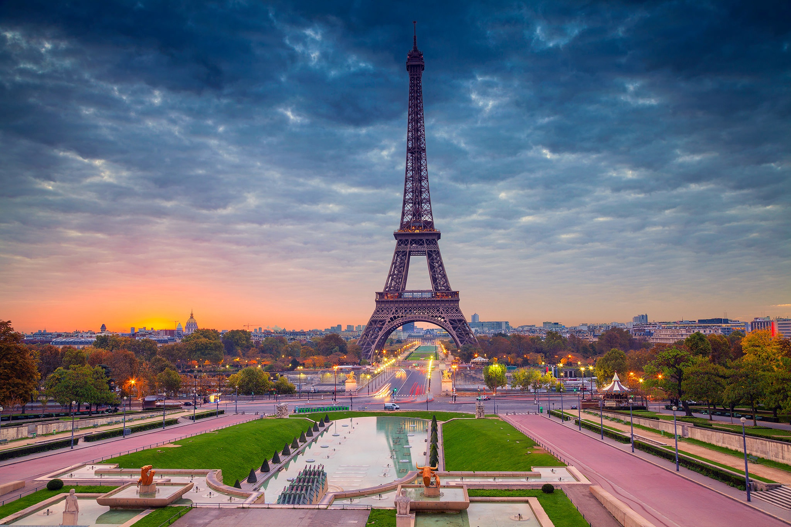
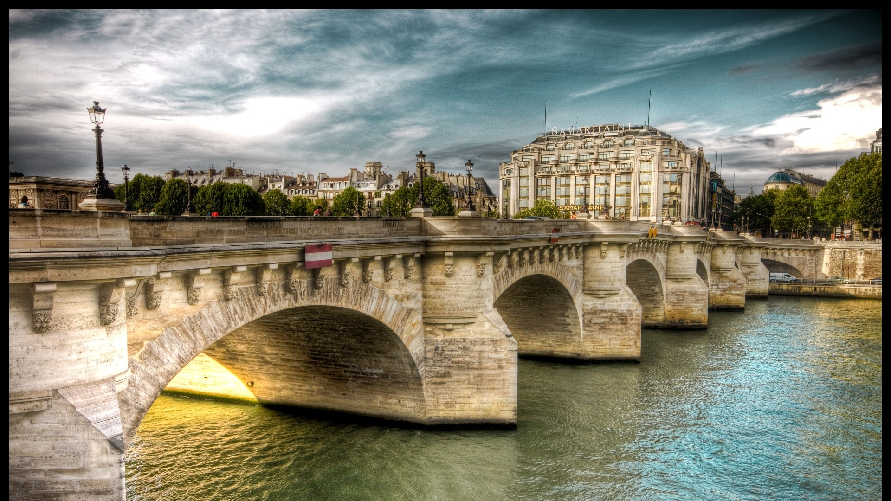

Paris - the popular place of tourism
The one of the most popular city around the worls - is Paris.
Actually, the city has a rich histoty and also now quite a number of people are interested in visiting this place

History
Ancient:
Obviously, Paris has a bit of events, which are compound with the history of this city.
Also, everybody knows Paris - is a capital of France and in addition to that the most tremendous city in the country.
And according to the history, Paris was build by north german tribes, which are called "Kelts", and particularly, Paris was a place, where happened a plenty of events,
it includes of battles of the local tribes with soldier of the Roman Empire.
Middle centuries:
In 508, the city became the capital of the Merovingian kingdom. In the VI century churches and monasteries were built everywhere. At that time, the population was 15-20 thousand inhabitants. A fortress towered on the Sieve, the residences of the king and the church authorities were located. The basis of the city's existence was trade, and the possibility of access to the sea (via the Seine) contributed to the appearance of merchants from the East — mainly Syrian and Jewish.
In the VII century, Paris lost its metropolitan function after the king of the Franks, Chlothar II, moved to Clichy, and later Charlemagne to Aachen. After the accession to the throne of the first king of France of the Capetian dynasty, Hugo Capet, at the end of the X century, again became the capital of France
New time:
At the beginning of the XVI century, under King Francis I, Paris finally became the capital of France. In the XVI—XVII centuries, to streamline the collection of taxes and other purposes, the city was divided into 16 districts. At this time, the position of the head of the local government of Prevost turned into a dependent on the king. By the end of the XVI century, about 300 thousand people lived in the city.
In the second half of the XVI century, during the Reformation, Paris was shaken by religious wars that engulfed France. Dissent was persecuted, heretics were sent to the stake. About 20 thousand citizens professed the ideas of Protestantism. On the night of August 24, 1572, St. Bartholomew's Night took place, which claimed the lives of over 5 thousand people. During this period, the city was subjected to a 5-year siege by the troops of the King of Navarre, during which about 30 thousand people died. At the beginning of the XVII century, many famous buildings were built under Henry IV, in particular the New Bridge and the Royal Square. In 1622 Paris became an archdiocese
The Newest time
During the Second World War, Paris was occupied by German troops, German military marches took place on the Champs—Elysees, the Abwehr was located in the Lutetia Hotel, the Gestapo was located on Lariston Street, the city lived according to Berlin time and with German signs. The occupation lasted until the end of August 1944, when the surrender of the German General von Choltitz was accepted by General Leclerc. On August 25, Charles de Gaulle makes a famous speech from the balcony of the city hall: "Paris is desecrated, Paris is broken, Paris is exhausted, but Paris is free!".
The riots of May 1968 took place here, which ultimately led not so much to a change of government as to a radical redistribution of society, a change in the mentality of the French.
On November 13, 2015, a series of terrorist attacks took place in Paris: explosions thundered at the Stade de France stadium and the Contoire Voltaire cafe, visitors to several restaurants were shot, spectators and actors were taken hostage at the Bataclan Theater. The responsibility for the incident was assumed by those
Geographic characteristics
The General part
Basically, Paris is situated in the north of France, which is located in the West Europe.
A climate of the capital is moderate with some influence of a sea, particularly the climate is based on 4 seasons with ammending of a sea in the west.
A river's name, which flows throught the city, is "Sena".
(Actually, the city has a moderate-continental climate, although thanks to locating, Paris is infuenced by a sea, which is situated in the north-western part of the whole country).
The most popular landmarks
Atrractions:
- The Eifel Tower;
- One of the most famous bridges;
- The river;
